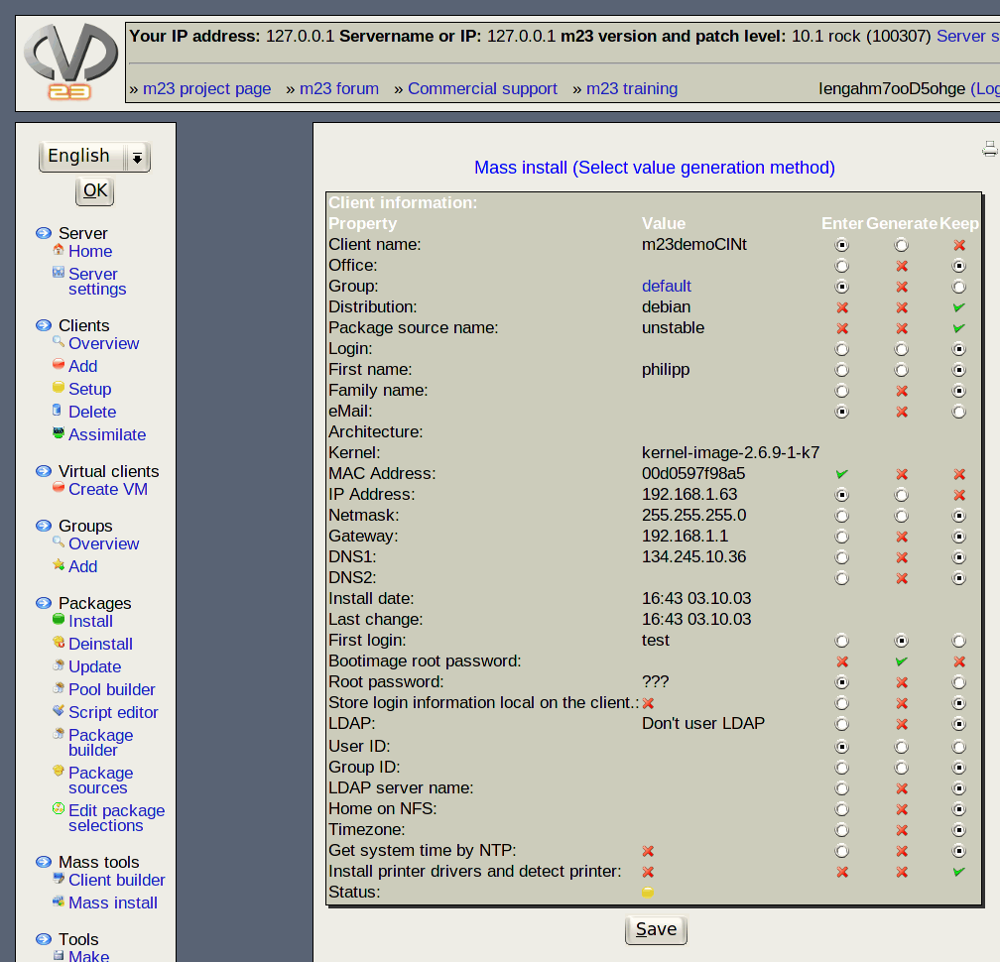

Next:
There are 3 methods
Up:
Mass installation
Previous:
Hint
Contents
Select value generation method

Here you can select the method for generation of the needed values.
Subsections
There are 3 methods
dodger 2014-08-06